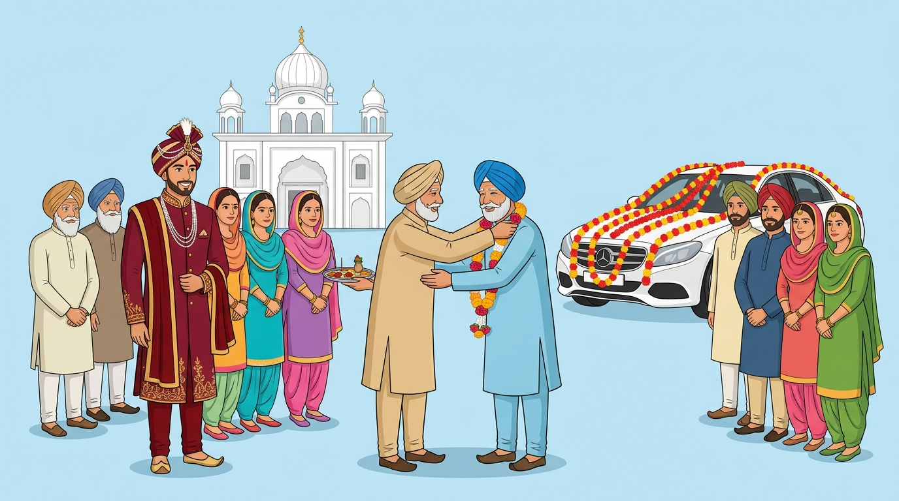
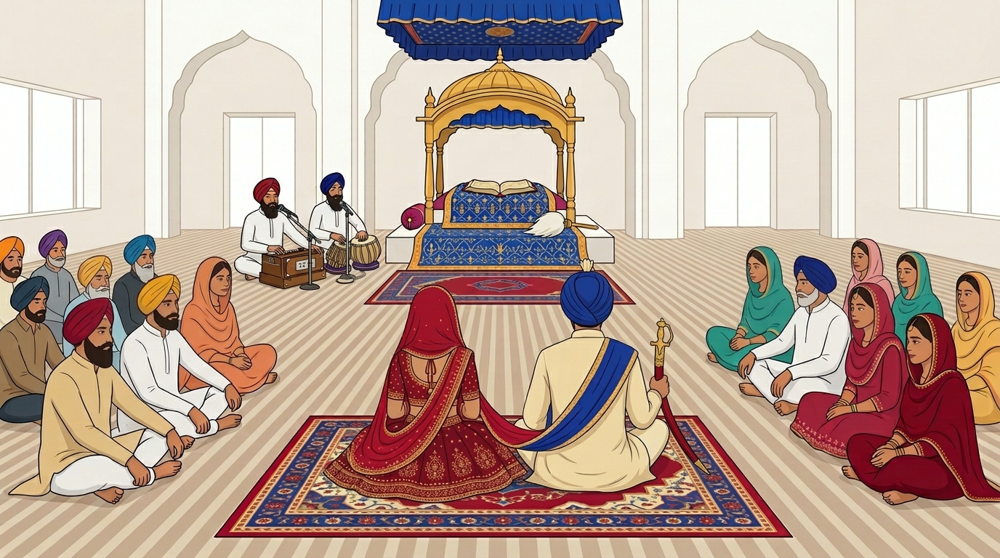

Traditional Punjabi Weddings 101
Wedding Day Rituals: Interactive Guide
By Sukhman Sandhu
1. Baraat Arrival & Milni Ceremony
Interactive activity generated through AI Google Gemini
Click the numbered pins on the image to inspect key focal points of the outdoor arrival ceremony:

1
2
3
AI generated image from Google Gemini
💡 Click a pin on the image above to learn about that focal point!
2. Inside the Anand Karaj Ceremony
Interactive activity generated through AI Google Gemini
Click the numbered pins on the diagram to explore the elements of the sacred Sikh ceremony:

1
2
3
4
AI generated image from Google Gemini
💡 Click a pin on the image above to learn about that focal point!